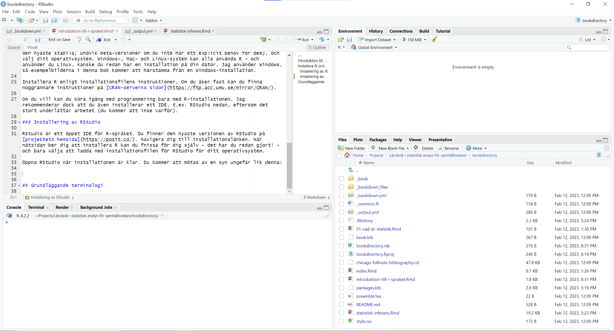
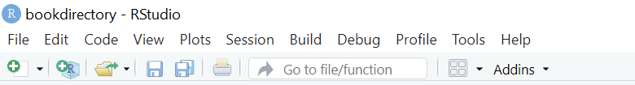
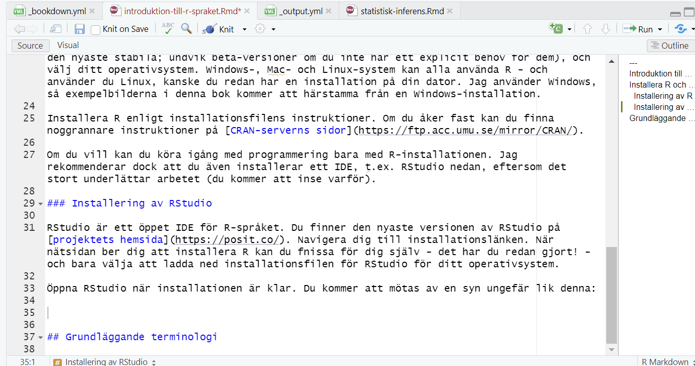
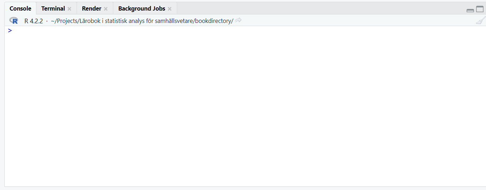
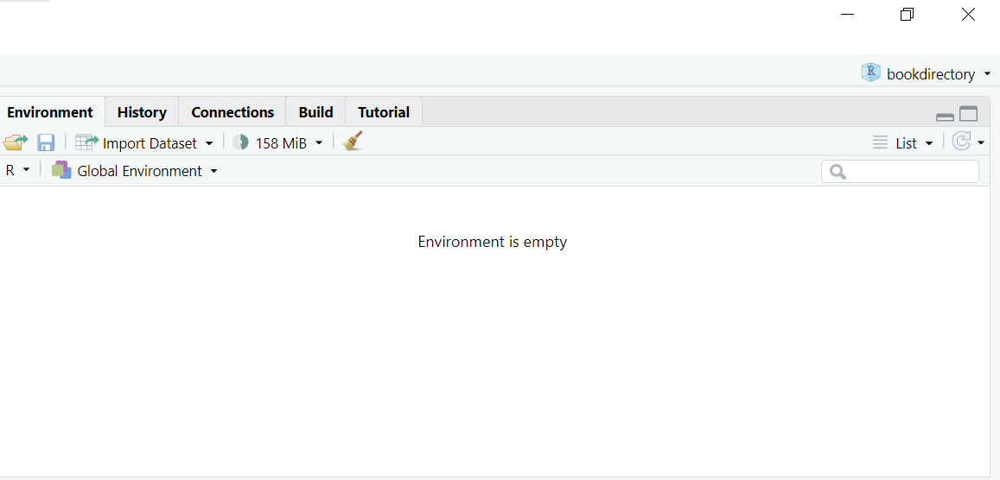
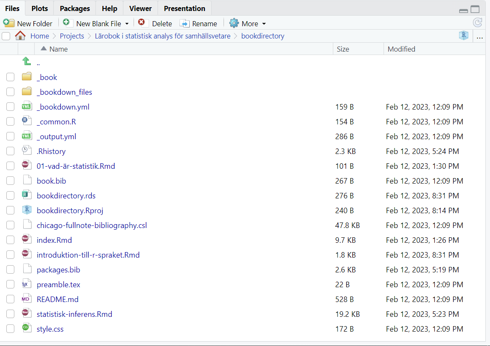

data <- c(1:5)7 Introduktion till R-miljön
R är ett öppet programmeringsspråk för statistisk analys. “Öppet” innebär att vem som helst kan gratis ladda ned och installera R, men även utveckla R. Detta innebär att R har otroliga mängder statistiska verktyg, de nyaste metoderna, och många sätt att göra statistisk forskning. Detta innebär också att verktyg kan gå sönder, fungera instabilt eller innehålla fel.
Om du har jobbat med statistik tidigare, kanske du är bekant med ett annat verktyg, så som IBM SPSS Statistics, SAS, Stata, eller kanske Microsoft Excel. Det dåliga är, att du måste troligen lära dig mycket nytt med R - inte minst för att det största arbetet görs med kodtext, inte med menyer och visuella hjälpmedel. Å andra sidan är statistiken densamma överallt, och i många syften är R mer pedagogiskt än “enklare” statistiska verktyg: då du skriver kod i R måste du berätta exakt vad du vill ha ut ur analysen. Det finns med andra ord inga genvägar (nästan).
7.1 Installera R och RStudio
För att använda R (och följa med i boken) måste du först installera R. Utöver detta rekommenderar jag varmt att du installerar ett IDE (eng. Integrated Development Environment). I denna bok använder jag RStudio, och därför ger jag instruktionerna för att installera RStudio. Du kan fritt välja ditt eget IDE, men märk då att den visuella utläggningen (samt några verktyg) kan se annorlunda ut eller saknas. R i sig är detsamma oavsett vilket IDE du väljer.
7.1.1 Installering av R
Du finner den nyaste installationen av R på R-projektets hemsida. Vid skrivande stund är den nyaste versionen 4.2.2, och denna bok är skriven med version 4.2.2.
base::getRversion(): Returnerar versionen av R du har aktiv.
R är decentraliserat, vilket bl.a. innebär att det inte finns en endaste plats att ladda ned språket från. Istället laddar vi R (och senare R-resurser) från CRAN (eng. Comprehensive R Archive Network). CRAN uppdateras kontinuerligt till servrar upprätthållna av universitet runtom världen. Det betyder att i sällsynta fall kan en specifik CRAN-server vara “efter” i uppdateringarna, men oftast innebär detta enbart att du måste välja vilken server du laddar R-relaterade resurser ned från.
Inget universitet i Finland upprätthåller CRAN vid tillfället, men t.ex. Umeå universitet har en uppdaterad CRAN-server.
Efter att du har valt CRAN-server, välj R-installation enligt versionen du vill ha (oftast den nyaste stabila; undvik beta-versioner om du inte har ett explicit behov för dem), och välj ditt operativsystem. Windows-, Mac- och Linux-system kan alla använda R - och använder du Linux, kanske du redan har en installation på din dator. Jag använder Windows, så exempelbilderna i denna bok kommer att härstamma från en Windows-installation.
Installera R enligt installationsfilens instruktioner. Om du åker fast kan du finna noggrannare instruktioner på CRAN-serverns sidor.
Om du vill kan du köra igång med programmering bara med R-installationen. Jag rekommenderar dock att du även installerar ett IDE, t.ex. RStudio nedan, eftersom det stort underlättar arbetet (du kommer att inse varför).
7.1.2 Installering av RStudio
RStudio är ett öppet IDE för R-språket. Du finner den nyaste versionen av RStudio på projektets hemsida. Navigera dig till installationslänken. När nätsidan ber dig att installera R kan du fnissa för dig själv - det har du redan gjort! - och bara välja att ladda ned installationsfilen för RStudio för ditt operativsystem.
7.1.3 Navigering i RStudio
Öppna RStudio när installationen är klar. Du kommer att mötas av en syn ungefär lik denna:

Programmet är uppdelat ungefär i fem delar: högst uppe över hela fönstret finner du en navigeringsbalk med menyer så som File, Edit, Code, och så vidare. Sedan finner du fyra fönsteraktiga rutor, alla med en massa text, filer, tabbar och så vidare. Vi går igenom de viktigaste kort nedan.

I övre vänstra hörnet lever dina filer. Märk, att om du öppnar RStudio för första gången, så finns det inga filer här. Med andra ord finns inte heller fönstret. Men ingen fara! När du skapar dina första R-filer kommer de att synas här, och din vy kommer att se ut som på bilden.

I Figure 7.3 har jag öppet fyra filer relaterade till denna bok: _bookdown.yml, introduktion-till-r-spraket.Rmd (detta kapitel), _output.yml och statistisk-inferens.Rmd. R-kod kan skrivas i en fil för att sedan köras (eng. execute). Du kan skapa R-filer fritt, med en regel: om du inte importerar filen som ett paket (se kapitel XXX), så kan du inte köra kod från en fil om inte filen är öppen och aktiv i rutan. Det är bra att lära sig att samla skriven kod i filer, så att du kan reproducera ditt arbete i ett senare skede.
I nedre vänstra hörnet finner du verktyg relaterade till att köra kod, så som visas i Figure 7.4.

Tabben Console agerar som ett slags live-fönster för att köra kod: du kan skriva direkta kommando i konsolen och trycka på Enter för att köra dem i realtid. Allt du kan göra genom kod i filerna kan du även göra i konsolen, men det blir tungt att köra komplexa kodfiler rad för rad i konsolen. Konsolen är dock användbar när du testar saker, eftersom du kan snabbt köra om kommando: använd PIL UPP och PIL NED för att återskapa kommando som du kört senast!
Tabben Terminal kör ditt operativsystems egna kodterminal. I denna kurs behöver du inte den, men om du kan använda terminalen eller vill jobba med t.ex. Git eller annan versionskontroll, kan terminalen vara av god användning.
Tabben Render beskriver vad som görs när du kör en fil. Här ser du bl.a. varningar och felmeddelanden (du kommer att se dessa ofta!), samt annan text och debugging som du kanske gör.
Tabben Background Jobs används om du gör asynkrona kodkörningar - något väldigt överkurs för en nybörjare i statistisk data-analys.
I övre högra hörnet finns några verktyg för att undersöka vad som finns öppet i din R-instans. Instanser är aktiva “versioner” av R. Du kan tänka dig att varje gång du öppnar R, öppnar du en ny papplåda inom vilken du kan stapla data, ändra på variabler, skapa grafer, jobba med olika paket, osv. Då du stänger R tömmer du lådan och packar den undan.

Under tabben Environment finner du dina öppna variabler. Då du öppnar RStudio är rutan kanske tom. Men pröva på att köra nedanstående kod i konsolen (klipp och klistra kodtexten i konsolen och tryck Enter för att köra):
base::c(): Skapar en vektor av givna data.
Om du körde den rätt, så borde det dyka upp en variabel med namnet data i Environment-rutan. Grattis, du har skapat din första variabel! Tabben History berättar åt dig vilka kodsnuttar som har körts senast, vilket kan vara nyttigt om du testar funktioner i konsolen. De övriga tabbarna är inte nödvändiga för vårt bruk, men du kan alltid undersöka manualen för RStudio om du är intresserad.
I nedre högra hörnet finner du filer, grafik och hjälpmenyn, bland annat. Dessa är väldigt användbara, och du kommer ofta att återvända till detta hörn.

Tabben Files visar dig filstrukturen av den aktiva arbetskatalogen (eng. working directory). I detta skede kanske du ser filstrukturen av R-installationens katalog. Vi återkommer till hur du byter denna arbetskatalog till mappen där du (förhoppningsvis) sparar dina projektfiler.
Tabben Plots innehåller din grafik. Just nu är den tom, men ändra på saken genom att köra följande kod i konsolen:
hist(rnorm(100))
graphics::hist(): Skapar ett histogram av givna data.
stats::rnorm(n): Drar n antal urval från en normalfördelning.
Nu borde du se en fin graf med namnet Histogram of rnorm(100) i rutan1. Grattis - det var din första graf!
1 Denna bok visar exempel på vad som borde synas när jag skriver in grafisk kod. Du kan alltså jämföra bilden du skapade i RStudio med bilden i boken, för att kolla att du har kört allt rätt.
Tabben Packages visar alla paket du har installerat på din dator, samt ifall du har aktiverat paketet i din R-instans. Detta förklaras i ett senare kapitel.
Tabben Help visar dig hjälpfiler och dokumentation om du ber om det. Detta är ytterst viktigt! Du kommer väldigt ofta att finna dig i en situation där du vet att en funktion finns, men du vet inte hur den fungerar. Med förtecknet ? kan du söka efter förklaringar i R-dokumentationen: ?hist öppnar hjälpsidan för den inbyggda R-funktionen för att skapa histogram. I början kan hjälpsidorna vara svåra att läsa, men du finner snabbt att de alltid är strukturerade på ungefär samma sätt. Vi diskuterar detta mera i nästa underkapitel.
?func: Visar hjälpsidorna för funktionen func().
??func: Söker hjälpsidorna genom för dokument som nämner func.
Tabbarna Viewer och Presentation används inte i denna bok.
7.2 Ställ in din R-miljö
För att kunna jobba flytande med noggrann koll på var alla dina filer finns behöver du göra några preliminära inställningar i RStudio.
Det första du gör är att du skapar ett R-projekt:
- I navigeringsbalken, gå till
File > New Project... - Välj
New Directory - Välj
New Project - Ge ditt projekt ett namn under
Directory Name, t.ex. “regressionsanalys” då du övar regression. - Välj var på din hårdskiva R ska spara alla filer relaterade till projektet. Skapa alltid en ny mapp för nya projekt!
Din filstruktur blir nu synlig i Files-tabben i nedre högra hörnet, och innehåller troligen enbart din projektfil.
Var är mina analyser?!
Om du märker senare i ditt arbete att du inte längre minns var dina filer har blivit sparade på din dator, kan du använda dig av funktionen getwd(). Genom att köra den i konsolen får du reda på filadressen.
Du kan även ändra adressen senare, genom funktionen setwd(). Märk dock att detta inte flyttar över alla dina nuvarande filer, och kan därmed orsaka mycket strul och bekymmer.
base::getwd(): Returnerar filadressen för nuvarande arbetsmiljö.
base::setwd(path): Ställer in filadressen för arbetsmiljön till path.
Till näst ska du skapa en R-fil. Detta blir filen som du skriver din kod i för att sedan processera med datorn och köra. Du kan skapa en ny R-fil på tre sätt:
File > New File > R Script- Ikonen för ny fil strax under
File-menyn >R Script - Tryck
Ctrl + Shift + N
Genast efter skapande ska du komma ihåg att spara filen med ett deskriptivt namn:
File > Save- Ikonen för att spara strax under
View-menyn - Tryck
Ctrl + S
Anefter att du skapar nya filer dyker de upp i Files-tabben i nedre högra hörnet, och du kan öppna dem genom att klicka på dem. Du kan ha flera filer öppna samtidigt, men var noggrann med vilken du editerar och kör som bäst.
För att köra kod kan du göra något av följande:
- För en kodrad: Klipp och klistra kodraden från kodfilen till konsolen och tryck
Enter. - Markera (måla över) en eller flera kodrader i kodfilen och tryck på
Run-knappen i kodfönstrets övre högra hörn. Alternativt, tryckCtrl + Enter. Code > Run Region > Run Allför att köra hela kodfilen i en gång. Alternativt, tryck ´Alt + Ctrl + R`.
Konsolen och kodfiler
Konsolen och kodfilerna lever i skilda världar. Du kan tänka dig kodfilen som en receptbok2 och konsolen som ditt kök. Bara för att du har ett mumsigt recept på vegetarisk lasagne betyder inte att maten finns färdig i ditt kök!
2 Fysiska versioner av receptbloggar.
Att skriva kod är skilt från att köra kod: när du skriver ned koden händer ännu inget. Först när du trycker på ´Run` skickas koden till konsolen som omtolkar den till maskinspråk bakom kulisserna, utför alla instruktioner, och spottar ut de värden du bett den att ge (inklusive felmeddelande).
Detta betyder, att om du inte har kört en viss rad kod sedan du öppnade konsolen (varje gång du stänger RStudio nollställs konsolen!), så vet inte konsolen om att den raden kod finns till. Om du får fel som tyder på att ett visst värde inte existerar, kan det alltså bero på att du kanske definierat värdet i din kodfil, men glömt att köra definitionen i konsolen.
När du stänger RStudio tömmer den sitt minne och “glömmer” bort allt som inte har sparats. Om du sparat dina kodfiler är det ingen fara, du kan öppna dem på nytt. Däremot glömmer R bort alla objekt du kallat i konsolen (mera om vad dessa är senare), så du måste upprepa dina steg på nytt när du börjar om nästa gång. Detta är en bra sak, trots att det låter arbetsdrygt! Det tvingar dig att reproducera dina resultat om och om igen, vilket säkrar att du vet vad du gör, resultaten stannar detsamma, och det faktiskt går att reproducera dina analyser.
RStudio kan spara arbetsmiljön i formen av en .Rdata-fil, och när du stänger RStudio frågar den dig om du vill göra så. Detta är dålig praxis och rekommenderas inte, eftersom du riskerar att blanda ihop projekt och data om du byter mellan olika analyser.